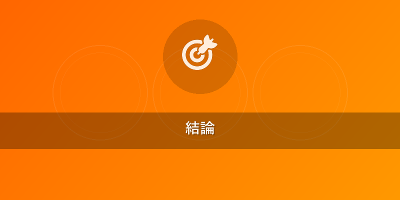
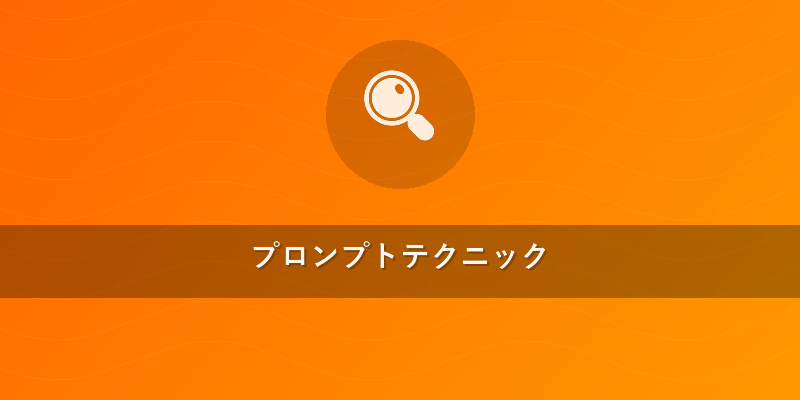

【2026年版】Flux 使い方 完全ガイド | AI画像生成の基本と応用
ブログ名: Flux AI画像生成ラボ カテゴリ: Flux 使い方
この記事でわかること
- Flux AI画像生成の始め方、アカウント登録から基本操作、Web UIの活用法。
- DSLRレベルのフォトリアリズムを最大限に引き出す、Flux特有のプロンプトテクニックとパラメータ設定。
- ComfyUI、Replicate、fal.aiなどの外部ツールとFluxを連携させ、ワークフローを効率化する実践的な方法。

結論
2026年現在、Black Forest Labsが開発するFluxシリーズは、AI画像生成におけるフォトリアリズムの新たな標準を確立しました。特にDSLRで撮影されたかのような圧倒的な写実性と、驚異的な生成速度を両立させている点が、他の追随を許しません。初心者の方でも直感的なWeb UIから簡単に高品質な画像を生成でき、「Flux 使い方」をマスターすることで、プロのクリエイターはComfyUIやAPI連携を通じて、無限の表現力を手に入れることができます。本記事では、Fluxの基本から応用までを網羅し、あなたの創造性を次のレベルへと導きます。
本題
Flux AI画像生成とは？その特徴と進化（2026年最新版）
Fluxは、Black Forest Labsによって開発された最先端のAI画像生成モデルであり、特にフォトリアリズムにおいて業界をリードしています。2026年には、シリーズがさらに進化し、Flux.1 Pro/Dev/Schnellといったサブモデルに加え、より高性能なFlux 2が登場。これらのモデルは、従来のAI画像生成モデルでは難しかった、被写体の質感、光の反射、影の階調、ボケ味の表現に至るまで、DSLRカメラで撮影したかのような息をのむリアルさを実現します。
Fluxの大きな特徴は以下の通りです。
- DSLR級フォトリアリズム: 微細なディテール、リアルな肌の質感、光と影の精緻な描写など、写真と見分けがつかないレベルの品質です。
- 高速生成: 高品質な画像をわずか数秒で生成できるため、試行錯誤のサイクルを劇的に短縮します。
- 高解像度・高精細: 標準で高解像度での出力が可能で、さらなるアップスケーリングにも対応します。
- 一貫性: 同じキャラクターやスタイルを維持した画像を複数生成する際の安定性が向上しています。
- 直感的な操作性: 初心者でも迷わず使えるWeb UI「Flux Studio」を提供します。
Fluxは、単なるテキストからの画像生成にとどまらず、プロフェッショナルな写真家、デザイナー、マーケター、ゲーム開発者など、幅広いクリエイターにとって不可欠なツールとなっています。
Flux 使い方：アカウント登録から初回画像生成まで
「Flux 使い方」の第一歩は、Black Forest Labsの公式サイト (https://blackforestlabs.ai/) でのアカウント登録です。2026年時点では、無料のトライアル期間が提供されていることが多く、まずはこれを活用してFluxの性能を体験することをお勧めします。サブスクリプションプランは、利用頻度や生成クレジット数に応じて複数用意されています。
- アカウント登録: 公式サイトにアクセスし、メールアドレスとパスワードで登録します。GoogleやGitHubアカウントとの連携も可能です。
- Flux Studioへのアクセス: ログイン後、Web UIである「Flux Studio」にアクセスします。ここでは、シンプルで直感的なインターフェースが提供されており、初心者でも簡単に画像生成を開始できます。
- プロンプトの入力: 画面中央のテキストボックスに、生成したい画像の具体的な説明（プロンプト）を入力します。まずは簡単なものから試してみましょう。
A futuristic city at sunset, highly detailed, cyberpunk style - パラメータ設定: プロンプト入力後、必要に応じて以下のパラメータを設定します。
- Aspect Ratio (アスペクト比): 画像の縦横比。例:
1:1(正方形),16:9(横長),9:16(縦長)。 - Negative Prompt (ネガティブプロンプト): 生成したくない要素を指定します。例:
blurry, low quality, deformed。 - Style Preset (スタイルプリセット): 「Photorealistic」「Cinematic」「Anime」など、特定のスタイルを適用できます。
- Seed (シード値): 生成される画像を固定するための数値。同じシード値とプロンプトでほぼ同じ画像が生成されます。
- Aspect Ratio (アスペクト比): 画像の縦横比。例:
- 画像生成: 設定が完了したら「Generate」ボタンをクリックします。数秒で、あなたのプロンプトに基づいた高品質な画像が画面に表示されます。
- ダウンロードと管理: 生成された画像はダウンロードして保存できます。また、Flux Studio内で過去の生成履歴を確認・管理することも可能です。
この基本操作をマスターすることで、あなたはすぐにFluxの魅力に取り憑かれることでしょう。
上級者向け：外部ツール連携でFluxを最大限に活用
Fluxの真価は、そのAPIと、ComfyUI、Replicate、fal.aiといった外部ツールとの強力な連携によって発揮されます。これにより、高度なワークフローの構築や、カスタムアプリケーションへの組み込みが可能になります。
ComfyUIとの連携
ComfyUIは、ノードベースのグラフィカルインターフェースでAI画像生成のワークフローを構築できるツールです。FluxはComfyUI用のカスタムノードを提供しており、これにより高度な制御と柔軟な生成プロセスを実現します。
- ComfyUIの導入: まず、自身のPC環境にComfyUIをセットアップします。GitHubからクローンし、必要な依存関係をインストールします。
- Fluxカスタムノードのインストール: ComfyUI Managerなどを利用して、Black Forest Labsが提供するFlux用カスタムノードをインストールします。これにより、ComfyUIのワークフロー内でFluxモデルを直接呼び出すことが可能になります。
- ワークフローの構築: ComfyUI上で、テキストプロンプトノード、Fluxモデルロードノード、サンプラーノード、画像表示ノードなどを接続し、自分だけのワークフローを作成します。ControlNetやLoRAといった追加のモデルと組み合わせることで、ポーズ、構図、スタイルの一貫性を高度に制御できます。
- 具体例: 特定のポーズ（ControlNet）で、特定のキャラクター（LoRA）が、DSLRで撮影されたような写真（Flux）を生成するワークフロー。この組み合わせにより、キャラクターデザインや商品写真など、一貫性のあるシリーズ画像を効率的に生成できます。
Replicate / fal.aiでのAPI連携
Replicateやfal.aiは、Fluxを含む様々なAIモデルをクラウド上で簡単に利用できるプラットフォームです。APIを通じてプログラムからFluxを呼び出すことで、バッチ処理、自動化、Webアプリケーションやモバイルアプリへの組み込みが可能になります。
- APIキーの取得: Replicateまたはfal.aiのアカウントを作成し、APIキーを取得します。
- Fluxモデルの選択: 各プラットフォームでBlack Forest LabsのFluxモデルを検索し、利用可能なエンドポイントを確認します。
-
Pythonコード例（Replicateの場合）: ```python import replicate
APIキーを環境変数に設定することを推奨します
os.environ["REPLICATE_API_TOKEN"] = "YOUR_REPLICATE_API_TOKEN"
output = replicate.run( "blackforestlabs/flux:MODEL_VERSION_ID", # 最新のモデルバージョンIDを確認してください input={ "prompt": "photorealistic portrait of a young woman, soft studio lighting, high detail, Canon EOS R5, f/1.4", "negative_prompt": "blurry, low quality, deformed, bad anatomy", "width": 1024, "height": 1024, "aspect_ratio": "1:1", "num_inference_steps": 50, "guidance_scale": 7.0 } ) print(output) ``` これにより、Fluxの強力な画像生成機能を、あなたのカスタムアプリケーションにシームレスに組み込むことができます。特に、大規模な画像セットの生成や、リアルタイムでの画像生成サービスを提供したい場合に非常に有効です。
{{internal_link:ComfyUIの基本と導入方法}}に関する詳細はこちらの記事をご覧ください。

プロンプトテクニック
FluxのDSLRレベルのフォトリアリズムを最大限に引き出すためには、単に漠然とした言葉を並べるのではなく、具体的で詳細なプロンプトを作成するスキルが不可欠です。「Flux 使い方」の真髄は、プロンプトエンジニアリングにあります。
DSLR級フォトリアリズムを引き出すFluxプロンプトの基本
- 具体的な描写: 被写体の特徴、服装、感情、ポーズ、場所、時間帯、天候、光の質（自然光、スタジオ照明、夕焼け、逆光など）を詳細に記述します。
- カメラ・写真用語の活用:
DSLR photography,professional studio lighting,cinematic lighting,shallow depth of field,bokeh,film grain,wide angle,telephoto,macro,8k resolution,ultra detailed,textureなどの用語を使うことで、AIが写真的な要素を強く意識します。 - 感嘆詞や強調:
stunning,breathtaking,masterpieceといった言葉や、重み付け構文を使って、特定の要素を強調します。 - ネガティブプロンプトの徹底:
blurry,low quality,deformed,bad anatomy,ugly,cartoon,painting,illustration,text,watermark,mutatedなど、生成したくない要素を明確に指定することで、品質を劇的に向上させます。
Flux独自のパラメータと構文
Fluxは、汎用的なプロンプトの記述に加え、独自のパラメータや構文をサポートすることで、より細かな制御を可能にします。Flux.1とFlux 2では、利用できるパラメータやその効果に若干の違いがあるため、モデルの特性を理解して使い分けることが重要です。
--ar <width>:<height>(アスペクト比): 画像の縦横比を指定します。例:--ar 16:9。--seed <number>(シード値): 特定の画像を再生成したり、わずかなバリエーションを生み出したりするのに使います。--steps <number>(サンプリングステップ): 画像生成の反復回数。一般的に高いほど品質が向上しますが、生成時間も長くなります（通常30-70が推奨）。--cfg_scale <number>(プロンプトへの忠実度): プロンプトへの忠実度を調整します。高い値ほどプロンプトに厳密に従いますが、創造性が失われる場合があります（通常5-10が推奨）。--style <preset>(スタイルプリセット): 特定の視覚スタイルを適用します。Flux 2ではより多様なスタイルが提供されています。- 重み付け構文:
{keyword:weight}の形式で、特定のキーワードの重要度を調整します。{sunlight:1.2}のように1より大きい値で強調し、{cloudy:0.8}のように1より小さい値で弱めます。
実践プロンプト例（Flux 2向け）:
(photorealistic:1.3) a majestic golden retriever running through a field of wildflowers at sunrise, backlit by golden hour light, droplets of dew on its fur, professional wildlife photography, sharp focus on the dog's eyes, bokeh background, Canon EOS R5, f/1.8, 8k, ultra detailed, vibrant colors
negative prompt: blurry, deformed, low quality, bad anatomy, ugly, cartoon, painting, illustration, text, watermark, mutated limbs, foggy, overcast
このプロンプトは、被写体、光、場所、カメラ設定、画質キーワードを具体的に指定し、ネガティブプロンプトで不要な要素を排除することで、DSLRで撮影されたかのような非常にリアルな画像を生成します。
他のAI画像生成ツールとの比較
Fluxは、Midjourney、DALL-E 3、Stable Diffusionといった他の主要なAI画像生成ツールと比較して、その独自の強みを持っています。ここでは、客観的な比較を表形式で整理します。
| 特徴 | Flux (Black Forest Labs) | Midjourney | DALL-E 3 (OpenAI) | Stable Diffusion (Stability AI) |
|---|---|---|---|---|
| フォトリアリズム | 圧倒的 (DSLR級、業界最高水準) | 高い (芸術的、独自の世界観) | 高い (自然な描写、現実世界に近い) | 中〜高 (モデルによる、カスタマイズで向上) |
| 生成速度 | 非常に速い (数秒) | 速い (数十秒) | やや遅い (数分) | モデルと環境による (高速化可能) |
| 操作性 | 直感的 (Flux Studio Web UI), API, ComfyUI連携 | 直感的 (Discordベース) | 直感的 (ChatGPT/Bing Image Creator) | やや複雑 (UI選択肢多数、学習曲線あり) |
| プロンプト自由度 | 高い (詳細描写、パラメータ、重み付け、構文) | 高い (簡潔なプロンプトでも高品質、スタイルタグ) | 高い (自然言語理解に優れる) | 非常に高い (LoRA, ControlNetなど無限の拡張性) |
| API連携 | 非常に強力 (Replicate, fal.ai, ComfyUI) | 限定的 (サードパーティAPI経由) | あり (OpenAI API) | 非常に強力 (オープンソース、様々なサービスが提供) |
| 得意分野 | DSLR写真のような写実性、商用コンテンツ、デザイン | 芸術的なイメージ、コンセプトアート、独自の世界観 | 自然言語からの正確な具現化、ロゴ・テキスト入り画像 | カスタマイズ、研究開発、特殊なアートスタイル |
| コスト | クレジットベース (高性能ゆえ高め) | 月額サブスクリプション (複数のプラン) | ChatGPT Plusなどの一部として提供 | オープンソースは無料、商用サービスは有料 |
Fluxの最大の強みは、その比類なきフォトリアリズムと高速性にあります。特に写真のようなリアルな画像を求める場合は、Fluxが最適な選択肢となるでしょう。Midjourneyは芸術的な表現に優れ、DALL-E 3は自然言語の理解度が高くテキスト生成に強いです。一方、Stable Diffusionはオープンソースであるため、最も高いカスタマイズ性と拡張性を提供し、専門知識を持つユーザーにとっては非常に強力なツールとなります。Fluxは、これらのツールの長所を研究しつつ、実写に近い画質を追求することで、独自の地位を確立しています。
よくある質問（FAQ）
Q1: Fluxの利用料金は？無料プランはありますか？
A1: 2026年時点では、Black Forest Labsは、基本的な機能を体験できる無料トライアル期間や、少量のクレジットが付与されるフリーミアムプランを提供していることが多いです。本格的な利用には、生成クレジット数や利用期間に応じた複数のサブスクリプションプランが用意されています。プランによっては、Flux.1 ProやFlux 2などの高性能モデルへのアクセスが含まれます。公式サイトで最新の料金体系をご確認ください。
Q2: 生成した画像の商用利用は可能ですか？著作権は？
A2: はい、Fluxで生成された画像の商用利用は可能です。Black Forest Labsの利用規約に基づき、ユーザーが生成した画像の著作権は基本的にユーザー自身に帰属します。これにより、マーケティング素材、ウェブサイトのビジュアル、商品デザインなど、幅広い用途で安心して利用できます。ただし、利用規約やコンテンツポリシーは定期的に更新される可能性があるため、常に最新情報を確認し、特に不適切なコンテンツの生成や他者の権利を侵害するような利用は避けるようにしてください。{{internal_link:Fluxにおける著作権と商用利用ガイドライン}}も参照してください。
Q3: 生成画像の解像度はどれくらいですか？高画質化はできますか？
A3: Fluxは標準で高い解像度の画像を生成できます。例えば、多くのモデルで1024x1024ピクセル以上の出力をサポートしています。さらに、Flux Studio内にはアップスケーリング機能が組み込まれており、生成された画像を最大4倍、場合によってはそれ以上の高解像度に拡大することが可能です。この際、AIがディテールを補完するため、単なる拡大ではなく、画質の劣化を最小限に抑えつつ、よりシャープで精細な画像を生成できます。API連携を利用すれば、より柔軟なアップスケーリング処理をワークフローに組み込むことも可能です。
おすすめサービス・ツール
この記事で紹介した内容を実践するために、以下のサービスがおすすめです。
※ 上記リンクからご利用いただくと、サイト運営の支援になります。
まとめ
本記事では、「Flux 使い方」をキーワードに、Black Forest LabsのFlux AI画像生成モデルの基本から応用、外部ツール連携、プロンプトテクニック、そして他のAI画像生成ツールとの比較までを詳しく解説しました。
2026年現在、Fluxは、そのDSLR級のフォトリアリズムと高速生成能力により、AI画像生成の分野で独自の地位を確立しています。初心者の方も、Flux Studioの直感的なインターフェースから高品質な画像を簡単に生成できる一方で、プロのクリエイターはComfyUIやReplicate/fal.aiといったAPI連携を活用することで、複雑なワークフローを構築し、ビジネスレベルでの活用が可能です。
写真のようなリアルな画像を求めるのであれば、Fluxは間違いなくあなたの創造的なニーズに応えるでしょう。ぜひ、この記事で得た知識を活かし、Fluxの可能性を最大限に引き出してみてください。まずは無料トライアルから始めて、その驚異的な性能を体感することをお勧めします。そして、{{internal_link:Fluxの最新料金プラン}}やコミュニティに参加して、さらなる活用法を模索してみましょう。
あなたもFlux AI画像生成ラボの一員として、新たなクリエイティブな世界へ踏み出しましょう！